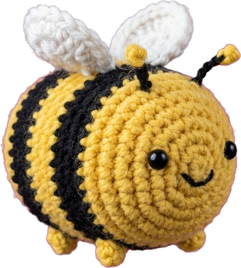
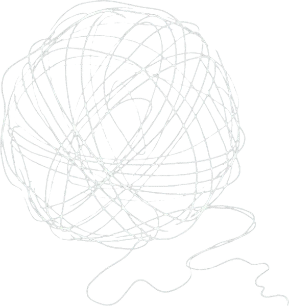
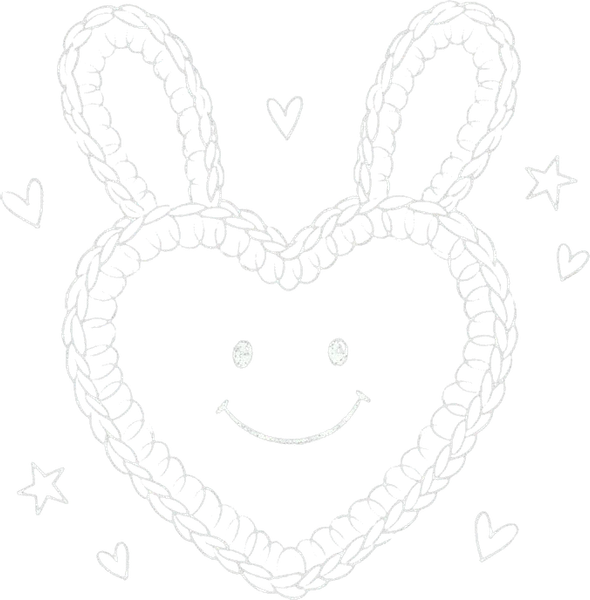
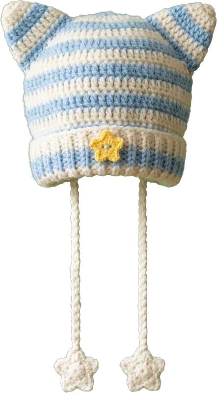

Little Critters

Tiny amigurumi friends. All round, all smiling.
Monthly maker prompt
A little prompt. A lot of yarn.
January challenge
Make something that represents something about you
Hover, tap or tab onto a card to flip it.

Choose the yarn first. Then make a tiny thing that matches your mood: a flower, a keychain, a headband.
A blanket, a bedtime toy, a lunchbox sticker. Crochet the thing you still remember by heart.

Turn a bench, a beach or your kitchen window into a small motif or a patch.

Give a critter your best trait: a cape for the brave, big ears for the good listener.

A cherry pair, a mushroom, a slice of toast. Snacks are the best amigurumi.
A hat for someone you'll be, a bag for a trip you're planning, a charm for luck.

Anything you like. A colour you love, a place, a person, a pet, a joke, a memory. It doesn't have to be obvious to anyone else. It only has to feel true to you.
Not even slightly. Try a granny square or a flower from our free patterns and dress it up.
Crochet is the star, but mixed materials are lovely: buttons, ribbon, embroidery, felt, beads.
Of course. Browse the shop or ask for a custom piece that says something about you.